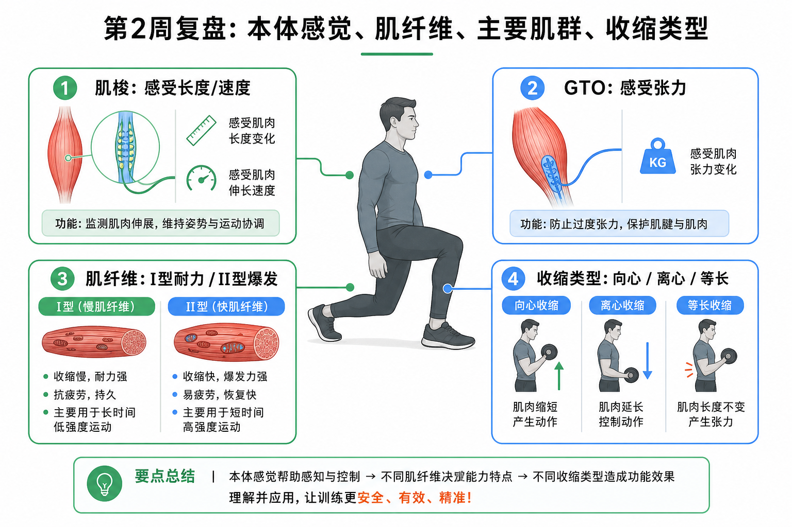

Day 14 · 第2周复盘-本体感觉/肌纤维/肌群/收缩
一句话总结
第2周不是一堆散概念，而是一条训练判断链: 感受器告诉身体位置和张力，肌纤维决定输出倾向，肌群负责具体动作，收缩类型描述动作阶段。会串起来，看到深蹲、卧推、跳跃就能说清“谁在感受、谁在发力、怎样发力”。

核心要点
-
本体感觉: 肌梭看长度速度，GTO 看张力，前庭系统帮身体找平衡。
先抓结论: 本体感觉像身体内部导航。你闭眼也能知道膝盖弯没弯、脚踝稳不稳，靠的是这些感受器不断回报位置、速度和张力。真实例子
肌梭
在肌腹里，感受肌肉长度变化和拉长速度。快速被拉长时，它会促发牵张反射，让肌肉更想收缩。
GTO
高尔基腱器在肌腱附近，感受张力。张力过高时会通过自生抑制降低输出，像保护用的保险丝。
前庭系统
半规管和耳石感受头部加速度与位置。单脚站、转体、跳跃落地都离不开它帮忙找平衡。
快速下蹲再起跳时，肌梭对快速牵张很敏感，帮助你更快反弹；重负荷硬拉接近极限时，GTO 对肌腱张力的反馈会影响身体是否敢继续输出。
常见误解❌以为平衡只靠“核心”。✅其实平衡是视觉、前庭、本体感觉、肌力和注意力共同工作。
-
肌纤维类型: I 型偏耐力，II 型偏力量速度，训练主要改变 II 型亚型比例和表现。
训练含义类型 大白话 训练场景 I 型慢氧化 省油耐跑的小发动机，线粒体和毛细血管多，力量小但抗疲劳。 长跑、低强度长时间维持、姿势耐力。 IIa 型快氧化糖酵解 兼顾速度和续航的中间档，可被训练塑造。 中等次数力量训练、间歇跑、球类反复冲刺。 IIx 型快糖酵解 大马力但耗油快，爆发强、疲劳快。 大重量单次、短冲刺、跳跃爆发。 耐力训练让肌肉更会用氧、抗疲劳更好；力量和爆发训练提高高阈值运动单位参与和 II 型纤维表现。考试重点是: IIa 不会变成 I 型，训练更多是在 IIx 与 IIa 倾向之间调整。
常见误解❌以为练耐力会把快肌全变慢肌。✅其实人类训练适应通常不是 II 型直接变 I 型，而是代谢能力、募集策略和 II 型亚型特征改变。
-
肌群功能: 上肢看推拉，核心看抗，起止点帮助你反推动作方向。
先抓结论: 肌肉不是按“好看位置”记，而是按“跨哪个关节、拉动哪两端、让哪段骨头靠近哪段骨头”来记。真实例子
推类主线
胸大肌做肩水平内收、内旋和屈曲辅助；三角肌前束和肱三头肌常协同完成卧推、俯卧撑。
拉类主线
背阔肌让肩伸、内收、内旋；划船和引体还需要肱二头肌、菱形肌、斜方肌帮忙。
核心主线
核心训练重点常是抗伸展、抗旋转、抗侧屈、抗屈曲，让脊柱和骨盆在外力下保持可控。
卧推时胸大肌是主动肌之一，三角肌前束和肱三头肌是重要协同，肩袖和肩胛稳定肌让肱骨头和肩胛骨保持好位置。Pallof press 不是练“转体发力”，而是练抗旋转。
常见误解❌以为核心训练就是卷腹越多越强。✅其实很多训练场景需要核心抵抗外力，而不是不断屈伸脊柱。
-
收缩类型: 向心举起、离心刹车、等长稳住，SSC 是先拉再缩的连续发力。
训练含义类型 判断方法 例子 向心 目标肌缩短并产生张力。 弯举上升时肱二头肌缩短。 离心 目标肌被拉长但仍主动控重。 深蹲下降时股四头肌和臀肌控制身体下落。 等长 长度基本不变但持续顶住外力。 平板支撑、墙蹲停住、深蹲底部停顿。 SSC 快速离心预拉伸后立刻向心。 反向跳、跳深、快速变向。 节奏训练本质上就是安排不同收缩阶段。3-1-1 可理解为离心 3 秒、底部等长 1 秒、向心 1 秒。爆发训练则更看重快速离心到向心的转换效率。
常见误解❌以为离心就是放松下降。✅其实离心是主动刹车；直接砸下去不是有效离心控制。
-
易混点: 肌梭 vs GTO、向心 vs 离心、I 型 vs II 型转换要分清。
考试抓手
肌梭 vs GTO
肌梭在肌腹，问“被拉多长、多快”；GTO 在肌腱附近，问“张力多大”。记法: 肌梭盯长度，GTO 盯张力。
向心 vs 离心
不要看重量上下，而要看目标肌长度。引体向上下降时，背阔肌和肱二头肌多在离心控制。
I 型 vs II 型
I 型耐疲劳，II 型高力量速度。训练可改变表现和 II 型亚型比例，不要写成 IIa 直接变 I 型。
题干如果出现“length and rate of stretch”，优先想到肌梭；出现“tension in tendon”，优先想到 GTO；出现“lowering phase under control”，优先想到离心。
-
动作分析顺序: 先识别关节动作，再找肌群，再判断收缩，再加上感受器反馈。
训练含义步骤 问题 深蹲例子 1. 关节动作 髋、膝、踝在做什么? 下降时髋屈、膝屈、踝背屈；起立时反向伸展。 2. 主要肌群 谁跨过关节并能产生同方向力矩? 臀大肌、股四头肌、腘绳肌、内收肌群、小腿肌群共同参与。 3. 收缩阶段 目标肌变短、变长，还是稳住? 下降多为离心控制，底部停顿等长，起立向心。 4. 感觉反馈 身体如何知道位置和张力? 肌梭、GTO、关节感受器和前庭系统不断修正姿势。 这样分析能避免“哪里酸练哪里”的粗糙判断。比如深蹲膝内扣，不只看股四头肌，还要看髋外展外旋控制、足踝稳定、本体感觉和动作节奏。
常见误区
❌很多人以为肌梭和 GTO 都是“保护器”。✅其实肌梭偏促收缩和位置反馈，GTO 偏张力监控和过载保护。
❌很多人以为耐力训练会把 IIa 练成 I 型。✅其实更准确说法是代谢能力提升、II 型亚型倾向改变、募集效率变化。
❌很多人只背肌肉名字，不会用于动作分析。✅考试和训练都要回到关节运动、起止点、收缩阶段和稳定需求。
记忆口诀
肌梭看长短，GTO 看张力；I 型耐久跑，II 型爆发起；推拉靠肌群，核心重在抗；向心举、离心刹、等长稳，先拉再缩 SSC。
翻转卡复习
实操关联
- 增肌: 用起止点和关节动作判断目标肌是否真的在主导，再用可控离心增加张力时间。
- 减脂: 疲劳下本体感觉会下降，循环训练后半段更要盯膝盖轨迹、落地声音和躯干稳定。
- 爆发: II 型纤维、快速募集和 SSC 转换效率都重要，跳跃训练先练落地再练反弹。
- 耐力: I 型纤维和有氧代谢更关键，但姿势稳定仍依赖核心抗力和关节感受器反馈。
- 康复: 疼痛或伤后先恢复位置感和低痛感等长张力，再逐步加入离心控制和动态速度。
- 动作纠错: 出现代偿时按“关节动作→肌群→收缩→反馈”排查，不要只说某块肌肉弱。